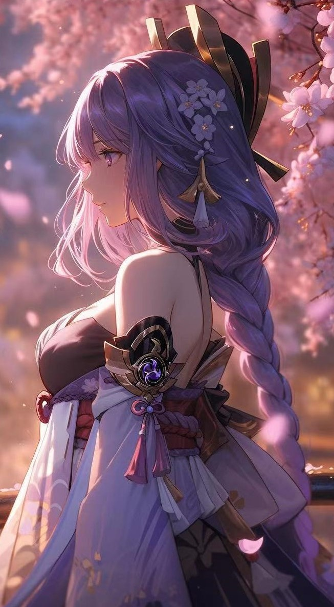
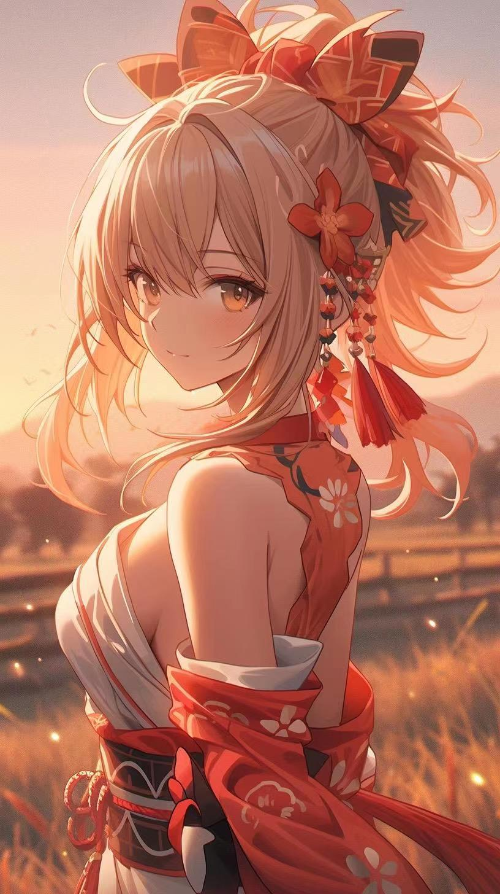
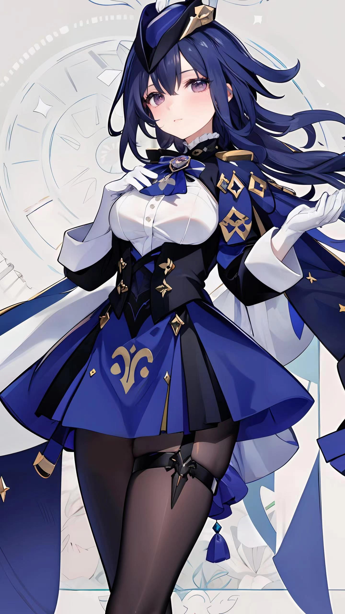
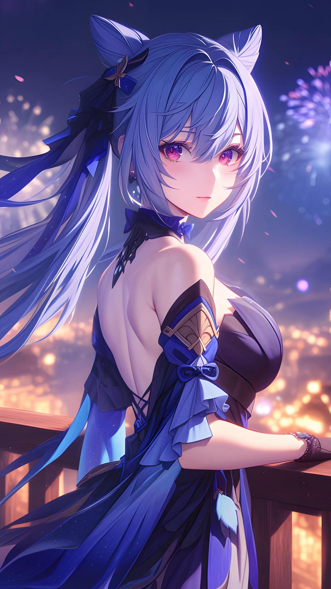

搜索
|  |  |  |  | ||
|
八重神子 稻妻鸣神大社的宫司大人，掌管神社的一切事宜。兼任轻小说出版社“八重堂”总编。 永恒之神的眷属，也是与其关系最为密切的好友。 细究起来，八重神子的头衔竟与她的性情同样难测多变。出于各种目的试图搞清神子“真面目”的人，可以从天领奉行府一路排到“八重堂”门口，然而迄今为止，成功者依旧寥寥。 ——只需记得，她永远是那位“兼具智慧与美貌的八重神子大人”就好。 八重神子外貌艳丽动人，一头柔顺的粉色长发在发尾束起，象征其神使身份的狐耳上常年挂着镶嵌着紫色宝石的耳坠，右耳的耳坠上镶嵌的是她的雷属性的神之眼。身着以红白二色为主色调的巫女服，同色的振袖与上衣分隔，作为袖套固定于上臂。宽大的黑色腰结系在后腰，双腿裸露在外，脚上穿着一对木屐。 |
雷电将军 成为将军之前，雷电影只是一介武人，负责履行前代的命令。 影也有和友人坐在樱树下玩歌牌的轻松时光。她从未做过最后的胜者，也没有品尝过狐斋宫大人为牌局赢家专门准备的奖励品。于是她将习武练刀的专注投入到歌牌的修习中，经常主动要求和真或是御舆千代进行歌牌对决，又或是一个人在月光下朗诵歌句。 影并不是贪图甜点。身为武人，她认定输掉的就要赢回来。这份糕点，更像是对她求胜之心的奖赏。可她很快又不自觉地笑了。糕点相当美味，如同胜利的滋味。至于她笨拙忍笑的模样，对友人们来说也是有趣的景象。时至今日，影仍时常回忆起那棵樱树。即便已经很久没去看过……即便那棵树下已经空无一人，她也希望时间能够永远停下。 |
珊瑚宫心海 海祇岛的“现人神巫女”，意为以凡人之躯承载神的意志、代替神明守护这片土地之人，即——海祇岛最高领袖 人们普遍认为珊瑚宫心海是一名足智多谋、深不可测的领导者。因为她脸上总是带着恬静的笑容，谈笑间将所有事务安排得井井有条。 “放心，有珊瑚宫大人在”，这句话也成为了海祇岛民众时常挂在嘴边的话语。 但其实，很少有人知道心海从前最大的梦想不过是做一个隐于幕后的军师。对她来说，与人聊天是极度消耗能量的事，每次演讲会不自觉地手抖，面对繁重的工作也会有退缩的念头。每天她最快乐的事情，就是完成工作后宅在家里，捧一本心仪的兵书独自研究。 年少登高位，对许多人而言都是莫大的幸运。可对心海来说，越在高处，越是如履薄冰 |
宵宫 小时候的我曾经幻想，如果天空是一块巨大的蛋糕，那在空中绽放的烟花就是生日蜡烛了吧？ 所以这次我准备了好久，制作了像生日蜡烛一样温暖的烟花！在这样的烟花下许愿，愿望也会更快实现吧。 嘿嘿，那么，该放烟花咯—— 看，就是这里啦！常来烟花店的小孩子们跟我说，生日来这里许愿很灵的。 嗯……希望能做出更多漂亮的烟花，希望家人身体健康，希望有机会能再和你一起旅行。 怎么办，有好多好多想法，全写下来怕是要写到天黑了……欸，你要帮我吗？ 嗯……想到了！就写这个。这样你只要陪我度过这个生日，就算是帮到我咯~！ |
克洛琳德 在枫丹，所有嫌疑犯在上法庭之前，都有一次“维护名誉”的机会，可以提出向官方的决斗代理人发起决斗。打赢了就可以免被审判，打输了还是要乖乖登上法庭。决斗代理人是从整个国家中精挑细选出来的武力最强者，克洛琳德更是其中的最强者 。 克洛琳德是一位高冷威严的美人，留着一头略微偏蓝的黑色长发，刘海边发较长，眼睛是紫罗兰色。头戴蓝色侧边帽，有白色羽毛装饰，头发用黑色蝴蝶结扎着低马尾，头发侧面是浅蓝色的挑染。立领下戴着一条深蓝紫色的领带，雷属性的神之眼挂在颈处。身穿白色衬衫，后面有着多层互叠的深蓝色和黑色相间的披风，腰部穿着类似束腰的黑色腰带，腰下是黑色短裙摆。手上戴着白色的长手套。双腿穿着黑色连裤袜，大腿戴有黑色腿环，脚上穿着白色厚短袜与黑色的高跟鞋，鞋跟材质为金属。整体衣着为黑色搭蓝紫色 |
刻晴 璃月七星之一，玉衡星。对“帝君一言而决的璃月”颇有微词——但实际上，神挺欣赏她这样的人 。岩王帝君为璃月港带来繁荣昌盛，他的治世威名化作演义传记为人津津乐道。然而，身为离神最近的人之一，刻晴似乎是最缺乏敬畏心的那个。 璃月七星随时关注着港内的大小事情，岩王帝君每年却只降临一次。千年历史已经证明追随帝君的脚步是正确之举，但刻晴始终认为，生而为“人”就该有“人”的骄傲，“人”的想法同样该被重视。 因此，她经常发表与帝君不同的意见，并一马当先地将其付诸实践。如此激进的做法确实取得了不少杰出成果，但也引来了诸多岩王帝君虔诚信徒的反对声。这种反对在刻晴看来，无非是偷懒的借口——习惯于活在神明庇护之下，永不会主动思考人类的前景。可总有一个人要走在时代最前沿，亲手开创新的道路。玉衡星，自然当仁不让。 |